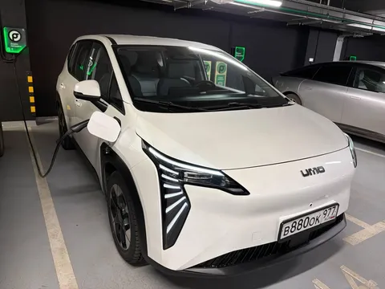
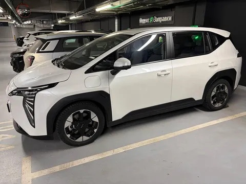
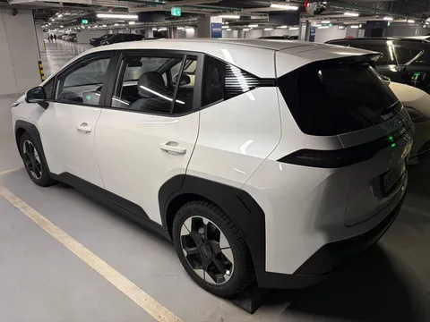
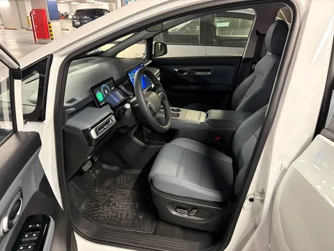
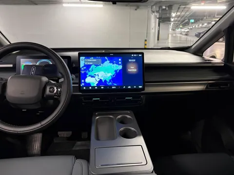

Возможно, вы уже слышали о недавней премьере электромобиля UMO 5. А в конце марта мои друзья из Яндекс Электро любезно дали мне Умку на неделю на тест. Огромное им за это спасибо, это был классный и необычный опыт! И я имею рассказать вам следующее.
Внимание: сейчас будет ЛОНГ-рид и много фоток.




